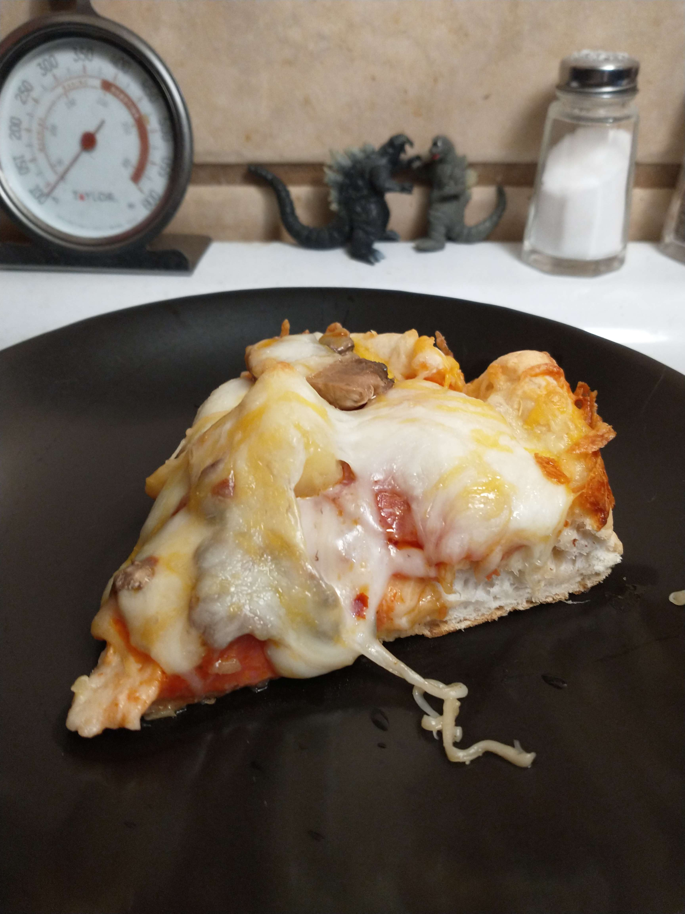

So deep dish pizza is like pizza, but you make it in a deep dish. Mind blowing stuff, really. Now you might think that We baked Ours on the stove eye, since it's in a cast iron skillet. Well I guess you can't really tell.. Anyways, point is, no, you cannot make DDP via stove eye heating. Well I guess you could if you really wanted to, but that's not what we're here for. Though maybe it should be..
Anyways, I don't know what most people think of in regards to deep dish pizzas, but I do know that the ones We made, and the recipe We shall share with thee soon, is really good. It has a very crunchy crust, pretty thick, but not really.. Like a mid-sized crust. But it is very cronchy. The crust does go up on the sides a good bit, so the whole crust is just like a bowl of pizza soup. Now if you're not careful with how much sauce and pineapple you put on there, you may very well think you are eating soup. So do warrant a tad bit'a caution on that regard.
To unlock DDP in the Recipes List, you must first aquire these ingredients:
Once these requirements have been met, you may unlock Deep Dish Pizza. These ingredients may applied and arranged in any order and quantity as one may wish, however do note that We suggest you put the crust first.
OH ALSO NOTE THAT THE CRUST SHOULD BE PRE-BAKED A LITTLE BEFORE YOU ADD ANY OTHER INGREDIENTS! I think We do around 8 minutes?
Once you've unlocked the recipe for DDP, you may begin the Summoning proccess. To start:
Haha look at this delicious slice of pizza. Hahahaheehehee, aren't you hungry now? Heheheheheheeheheh
